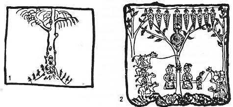
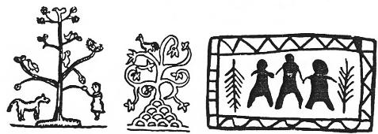
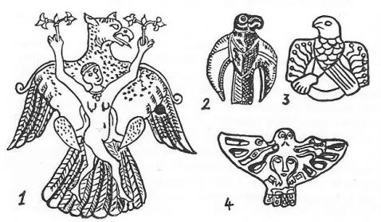

Er-Sogotoh destanı Yakut Türklerinin bir nevi millî destanı gibidir. Konu itibarı ile bu da bir Yaratılış ve türeyiş efsanesidir. Hatta Oğuz Destanını inceleyen Rus Şerbak, Oğuz-Han'a yakın en belirli Türk bahadırının Er-Sogotoh olabileceğini söylemişti.172 Aslında ise Oğuz- Han destanı ile Er-Sogotoh efsanesi arasında büyük bir fark vardır. Oğuz-Han da kutsal bir bahadır idi. Fakat yeryüzünde yaşıyor ve Türk milletini düzene koymakla vazifelendiriliyordu. Üstelik Oğuz-Han, Tanrı tarafından yaratılan ilk insanda değildi. Er-Sogotoh ise gökte yaşıyordu. Kendisi, yaratılan ilk insandı. Ne bir millete ve hatta ne de bir eşe sahipti. Bütün bunlara rağmen Er-Sogotoh destanı, Türk mitolojisinin önemli bir parçasıdır. Bu sebeple Er-Sogotoh destanını derin bir şekilde incelemeyi kendimize bir vazife bildik.

Şekil 19: Şamanların kutsal "Ağaç-Ana"ları (İvanof'tan).
Er-Sogotoh destanı, bir kaç ayrı seyyah ve araştırıcı tarafından toplanarak yayınlanmıştır. Destanın aynı olmasına rağmen, araştırıcıların metinleri arasında önemli farklar vardır. Bu sebeple bu destanın metinlerini ayrı ayrı incelemeyi faydalı buluyoruz:
1. A. Th. von Middendorf, Orta Asya ve Sibirya'da seyahat yapan en büyük araştırıcılardan biridir. Middendorf'un topladığı Er-Sogotoh destanında efsanenin kahramanı tıpkı bir Âdem gibidir. Fakat eşi yoktur. Bundan dolayı çok zahmet çekmiştir.173 Bunun içinde ona herkes Ereydeh-Buruydahçı lâkabını vermiştir. Çünkü o, bedbaht, çok zahmet çeken bir garip bir kimse idi.174 Burada da Cennet, Er Sogotoh'un evinin doğu yönündedir. Hayat Ağacına ise Hakan-Ağaç adı verilmiştir. Bu destanda Hayat Ağacı, klasik manasını kaybetmiş ve Yakut Türklerinin yer ve göğü birleştiren Demir-ağaç'larının mahiyetine girmiştir. Middendorf'un topladığı bu metnin baş kısmı iyidir. Fakat nedense son kısmı birdenbire kesilir. Er-Sogotoh, tıpkı Âdem gibi birdenbire gökten yere indirilir:
"İnsan'ın atasının, adı Er-Sogotoh'du,
"Çok, çok zahmetler çekmiş, dertleri de pek çoktu.
"Ereydeh-Buruydahçı lakabını vermişler,
"Yalnız yaşadığından, ona böyle demişler,
"Bir oba ortasında, büyük bir evi varmış,
"Bu evin dört yanını, gümüş köşeyle sarmış.
"Bu ev elli kapılı, kırk pencereliymiş,
"Evin çatısı ise, tam otuz kirişliymiş.
"Evden içeri girip, giden doğu yönüne,
"Ağaç Hakan'a rastlar, gelirmiş tam önüne.
"Büyük bir çayır vardı, bu yerin ortasında,
"Çok eski bir esinti, eserdi hep başında.
"Ağaç Hakan büyüktü, her şeyin anasıydı,
"Varlık ona bağlıydı, gökle yer binasıydı.
"Kökleri kaplar idi, Yeraltı dünyasını,
"Zirvesi deler idi, göğün dokuz katını,
"Tam yedi ayak idi, ağacın yaprakları,
"Ondan daha büyüktü, sarkan kozalakları,
"Ağacın tam kökünde, görülürdü bir kaynak,
"Hayat suyu bu idi, akar giderdi ap ak.
"Ak ve kara inekler, ihtiyar olmuşlardı,
"Bu sudan içenlerse, yeni can bulmuşlardı.
"Ağaçta uçan kuşlar yorgun bitap olurdu,
"Gelip bu sudan içen, yeni kuvvet bulurdu.
"Bu kutsal ağacında, bir sahibi var idi,
"Bir Dişi Tanrı idi, saçları da kar idi,
"Kendisi ihtiyardı, göğsü de ap alaca,
"Görenler sanır idi, bir keklik gibi, kırca.
"Memeleri büyüktü, aşağıya sarkardı,
"Uzaktan bakan kimse, iki tulum sanardı,
"Aslındaysa bu ağaç, normal boyda, küçüktü,
"Ana-Tanrı gelince, ona göre büyürdü.
"Büyürken sesler çıkar, gürültüyle esnerdi,
"Bu sesler yavaş yavaş, gittikçe genişlerdi.
"Er Sogotoh adlı er, "Yalnız yaşayan adam"
"Yakut Türklerinceydi, bu da bir nevi Âdem,
"Düşünmüş, demiş beni kimler doğurdu diye!
"Bana bu canı verip, meydana koydu diye!
"Gitmiş sormuş ağaca benim anam kim diye!
"Elbet bir atam vardır, benim babam kim diye.!
"Ağaç da dile gelip, soyunu sayıp dökmüş,
"Er Sogotoh hislenip, saygıyla dizin çökmüş,!
"Gök Tanrısı Er-Toyon, onun babası imiş!
"Karısı Kübey-Hatun, onun anası imiş!
"Aslında insanoğlu, göklerde doğmuş imiş,
"Bütün kutsallıklarla, vücudu dolmuş imiş!
"Ama bir gün gelmiş ki, demiş anne, babası,
"Haydi, buradan in git, topla tarağı tası!
"Annesi ona derken, haydi git sen iline,
"Bir tulum hayat suyu sıkıştırmış eline!
"Demişki, sen bu suyu, sol koluna al gezdir!
"Sana bu hayat verir, belki bir günü gelir!
"Aradan zaman geçmiş, bu insan bir er olmuş!
"Harp meydanlarındaysa, savaşlar eder olmuş!
"Nasıl olmuşsa biri, kalbini okla delmiş,
"Vermiş son nefesini, hayatı sona ermiş.
"Hayat suyundan Tanrı, bir kabarcık sıçratmış,
"Bu küçücük damlacık, kalbe konup ıslatmış,
"insan hemen dirilip, güçlenmiş hayat dolmuş,
"Dokuz defa daha çok, güçlü kuvvetli olmuş!
2. Aşağıdaki destan, meşhur Rus araştırıcısı İ. A. Hudyakov tarafından toplanmıştır. Kitabının eski olmasına rağmen, Yakut edebiyatının mitolojik türdeki en iyi örnekleri, bu yazarın kitabında derlenmiş ve Rusçaya tercüme edilmiştir.175 Hudyakov burada, Er-Sogotoh'tan pek fazla söz açmıyor. Bu metni seçerek buraya almamızın başlıca sebebi, Hayat Ağacı'nın Yakutlar tarafından kendi inançlarına nasıl uydurulduğunu ve nasıl Yakutlaştırıldığını göstermek içindir. Yakutlara göre dünya 8 köşeli idi. Bunun ortasından ise Kutup yıldızına kadar uzanan büyük bir ağaç vardı. Bu ağaca Türkler de Demir-Kazık derlerdi. Hayat Ağacı motifi, Türklerin astronomik düşünceleri ile âdeta bağdaştırılmış bir durumdadır:
"Dünyamız Yakutlarca, sekiz köşeli imiş,
"Yerin ortası ise, sarı göbekli imiş,
"Dünyanın göbeğinde bir de ağaç var imiş,
"Bu ağaç büyük imiş, göklere çıkar imiş.
"Bu ağacın her yanı, Tanrıdan hep süslüymüş,
"Kabukları, kütüğü, tıpkı som gümüşlüymüş.
"Ağacın gövdesinden, bir usare akarmış,
"Bu kutsal suyun rengi, altın gibi parlarmış.
"Ağacın budakları, ta göklere uzanmış,
"Gören sanırmış sanki, dokuz kollu şamdanmış!
"Yaprakları büyükmüş, dallarından sarkarmış,
"Yaprakların her biri, at derisi kadarmış,
"Ağacın tepesinden bir usare çıkarmış,
"Köpük, köpük kaynayıp, sarı renkte akarmış!
"Bu ağacın yanına, hiç kimse gidemezmiş,
"Bundan içenler ise, açlık hissedemezmiş!
"Bu sudan içebilen, artık mes'ut olurmuş,,
"Her şeye erişirmiş, Tanrıdan kut bulurmuş!
"İlk insanın atası, burda yaratılınca,
"Hayatı elde edip, tadını da alınca,
"Hemen ağacı görmüş koşup altına gitmiş,
"Kanıp bu sudan içmiş, hayatı elde etmiş.
"Bu ağacın zirvesi, ta göklere erermiş,
"Göklerin üç katına, ulaşıp da delermiş!..."
3. Er-Sogotoh destanının bu üçüncü metni N. Gorohov tarafından toplanmıştır.176 Yakut Türkleri arasından toplanmış olan bu destanın bilhassa baş kısmında, gök ve yerin yapılışı hakkında çok önemli bilgiler verilmektedir. Bu destana göre göklerin en üst katı Dokuz Felek çığrısı'dırki, bunlar durmadan dönerler. Onun altında 7 kat gök vardır. Cennet ise 7 kat göğün en üstünde ve ortasında bulunurdu. Burada ne ay ve ne de güneş batardı. Dünyanın sarı göbeğinden çıkan ağaç, buralara kadar uzanırdı. Bu metin Türklerin dünya görüşü ile ilgili olarak bize çok önemli bilgiler vermektedir. Bu destana göre, yer gibi göğün de bir göbeği vardı ve bu göbek de cennetten başka bir şey değildi. Cennet ve Hayat ağacı, diğer metinlerde olduğu gibi burada da göğün doğu yönünde idi. Bu gibi destanları anlatan ozanlar, genel olarak yönleri şaşırmakta ve her yön hakkında açık bir bilgi verememektedirler. Yakutlarda Ürüng, yani ak renk kutsallığın bir ifadesi idi. Bunun için bu destan Er-Sogotoh’a Ak-Oğlan demektedir. Çünkü o, Tanrı tarafından yaratılmış ilk ve kutsal insandı. Ak-Oğlan'ın Hayat ağacı ile konuşması da çok güzel bir sahnedir. Bu Destan’a göre Hayat ağacı konuşmaya başlarken, gökler gürlemiş ve yıldırımlar çakmıştı. Burada ise ağacın canlanışı ve dile gelişi, yaprakların nemlenişi ve sulanışı ile gösterilmiştir. Öyle anlaşılıyor ki Hayat Ağacı, oğlana süt ve su vererek ona yol göstermiş ve onu yeryüzüne göndermişti. Bunun için de dünyada işine yarasın diye eline su, ateş ve demir sıkıştırmıştı. Bu üç unsurun gökten indiğini de ayrı bölümlerimizde inceleyeceğiz. Burada da ilk insanı yaratan Hayat Ağacı değil, Büyük Tanrı Ürüng-Ayıg-Toyon idi. Buryat Moğollarına göre de, ağacın deliğinden çıkan bir kadın ilk insanı doğurmuştu177. Türklerde ise ilk insanı yaratan Hayat ağacı değil; büyük Tanrı idi. Uygurların menşe efsanesinde de, Uygurların beş atası gökten inen nurla ağaçtan doğmuşlardı. Gorohov'un derlediği bu güzel Yakut efsanesi şöyledir:
"Dipsiz, geniş, sonsuzdur, kara yerin en altı,
"Hareketsizce duran, simsiyah bir karaltı.
"Dokuz Felek çığrısı, göklerin üst katıdır,
"Göklerin en üstünde, dönüp duran çatıdır.
"Gök katları dizilir, feleklerin altında, "
Pek çok âlemler vardır, göğün yedi katında.
"Bir göbek yeri vardır, göklerin ortasında,
"Tanrı Cennet kurmuştur, katların arasında.
"Yeryüzü, Orta-Dünya, göklerin altındaydı,
"Bir de göbeği vardı, yerin ortasındaydı.
"Dünyada göğe çıkan demir bir ağaç vardı,
"O kadar büyüktü ki, yerle göğü bağlardı,
"Göklerin göbeğinde, gam, keder eksik idi ,
"Burda ne güneş batar, ne de ay eksik idi,
"Bu göbekte kış yoktu, süresiz yaz olurdu,
"Bir guguk kuşu vardı, herkese saz olurdu.
"İlk insanın atası, yaratılmıştı burda,
"Adı "Ak-Oğlan" idi, göz açmış idi orda,
"Gözünü açar açmaz, etrafına bakınmış,
"Ben neredeyim diyerek, uyanarak kalkınmış,
"Bir ova uzanırmış, Uzak Doğu yönüne,
"Çok yüksek bir dağ ise, çıkmış onun önüne,
"Bu dağın üzerinde, büyük bir ağaç varmış,
"Ağacın usaresi, hem parlak hem kokarmış,
"Bu ağacın kabuğu, nemi hiç kurumazmış,
"Suyu gümüş gibiymiş, yaprağı da solmazmış,
"Süslü, süslü bardaklar, dallarından sarkarmış,
"Bunu görenler sanki, bir tomurcuk sanarmış,
"Bu ağacın zirvesi, Yedi Göğü delermiş
"Gökler üstüne çıkıp, ta Tanrıya gidermiş,
"Ürüng-Ayıg-Toyon ki, yaratan Tanrı idi,
"İnsanlara can veren, yaşatan Tanrı idi,
"Bu Tanrı sahibiydi, göklerin üst katının,
"Ağaca at bağlardı, kazığıydı atının,
"Bu ağacın kökleri, yer dibine gidermiş,
"Tanrının meskenine, dikilmiş bir direkmiş.
"Ak-Oğlan güneylere, ne var diyerek bakmış,
"Bir Süt-Denizi görmüş, rengi de sütten akmış,
"Denizin kenarında, beyaz çamurlar varmış,
"Sanki süt ekşimiş de, köpüklenip kabarmış.
"Kuzey taraflarıysa, karanlık orman sarmış,
"Yapraklan titreşip, hayvan gibi oynarmış,
"Bir dağ yükseliyormuş, ormanın arkasında,
'Beyaz bir şapka gibi, aklık varmış başında,
"Bir zirve ki benzermiş, ak tavşan derisine,
"Rüzgârı durdururmuş, koymazmış gerisine.
"Batı yönleri ise, çok güzel fundalıkmış,
"Çayırlıklarla süslü, güzel bir ovalıkmış,
"Büyük çamlıklar varmış, bu ovanın ardında,
"Yaygın tepeler varmış, çamlığın arkasında.
"İnsanın tek atası, gözünü ilk açınca,
"Güneşin aydınlığı, her tarafa saçınca,
"Bu ilk insan Ak-Oğlan, ta içten hislenmişmiş,
"Ağaca yanaşarak, şöylece seslenmişmiş:
" - Ey benim saygı değer, güzel yüce Tanrıçam,
"Bana hayatı veren, ey benim büyük annem!
"Varlığım, neyim varsa, hep seninle dolmuştur,
"Dünyadaki varlıklar, hepsi senden doğmuştur!
"Ama öyle yalnızım, o kadar yalnız bilsen,
"Bari bana benzeyen, bir de eş kadın versen!
"Dolaşırım dünyada, işsiz, güçsüz, başıboş,
"Benim gücüme göre, bir eş ver, et beni hoş,
"Ben de insanoğlunu, tanımak istiyorum,
"Ben de insancasına, yaşamak istiyorum!
"Sana sığınıyorum, kutunu esirgeme,
"Ümit ver bana anne, beni yalnız besleme!
"Başkaca Tanrım yoktur, ben seni görüyorum!
"Kalbim saygıyla dolu, dizimi çöküyorum!"
"Bu sözler üzerine, yapraklar yeşillenmiş,
"Bir su ile kaplanıp, üzerleri nemlenmiş,
"Yapraklar ağlar gibi, sulanmış, taşa gelmiş,
"Bir nur gibi akarak, oğlanı aşa gelmiş!
"Sıcak bir rüzgâr esmiş, kalpleri serinletmiş,
"Ağaçtan gelen bir ses, her tarafı inletmiş!
"Ağacın tam kökünden, bir yarık yarılınca,
"Bu yarıktan ağaca, bir delik açılınca!
"Bir kadın çıkıvermiş, ağacın deliğinden,
"Ağacın kökündeymiş, aşağısı belinden,
"Kadının gür saçları uçuşup yanıyormuş,
"Fırlayan memesinden, sütlerse kaynıyormuş.
"Oğlan yaklaşmış ona, süt emmiş memesinden,
"Artık bir kere doymuş, vazgeçmiş yemesinden,
"Sütü emen Ak-Oğlan, ilk defa doymuş imiş,
"Vücudunun her yeri, kuvvetle dolmuş imiş.
"Bundan başka annesi, ona demiş kutlu ol,
"Saadetle dolup taş, hayatta hep mutlu ol!
"Ak-Oğlan'a, Ayrıca su, ateş, demir vermiş,
"Sonra da kaybolarak, tekrar yerine girmiş!"
4. Er-Sogotoh destanının en iyi metni tanınmış Alman dilcisi O. Böhtling tarafından derlenmiştir. Böhtling, Cermen dillerinin en büyük mütehassıslarından biri idi. Sonradan Sibirya'da seyahatler yaparak Yakut Türkçesi üzerinde de derinleşmişti. Yakutçanın Osmanlıca ile bir ilgisi bulunduğunu söyleyen ilk araştırıcılardan biri de bu idi. Bu kitabımızda Böhtling'in derlediği destanın tam bir metnini vermenin tabii olarak imkânı yoktur. Buna rağmen metindeki uzun tasvirleri ve önemsiz sözleri kaldırarak okuyucularımıza mümkün olduğu kadar tam bir özet sunmaya çalıştık. Destanda Er-Sogotoh'un vücud yapılışı Oğuz-Han'ınkini biraz andırmaktadır. Altay ve Yakut mitolojisindeki Ak-Deniz ile Süt Deniz'i burada da yer almıştır. Fakat bu motifler destanın tamamına hâkim görülmüyorlar ve yalnızca bir motif olarak anlatılıyorlardı. Destan da Kök-Börö, yani Gök kurtların geçmesi de Türk mitolojisi bakımından önemli bir noktadır. Hayat Ağacı yine, göğün doğu yönlerine konmuştur. Güneyde Türklerin kutsal kayın ağaçlarının yükselmesi de üzerinde durulması gereken bir motiftir. Kuzeyde ise kötü kadın Şamanlar yaşıyorlardı. Bunların daha kuzeyinde yaşayan ihtiyar ananın ise kim olduğu pek anlaşılamıyor. Bunun da Yakut mitolojisinde çok geçen bir "Baş cadı" olması çok muhtemeldir. Bütün bunlardan açık olarak görülüyor ki eski Türk Ve Yakut mitolojisinin bütün motifleri destanda eşit olarak yer almışlardır. Er-Sogotoh, Hayat ağacının önüne gitmeden önce de güneşe üç defa selâm vermişti. Er-Sogotoh'a göre güneş Hayat-Ağacından daha önemli idi.
Er-Sogotoh efsanesi, bir bakıma Oğuz destanına benzemektedir: Er- Sogotoh, kutsal menşeli bir kişi idi. Hayat Ağacı ile görüştükten sonra Kara-Han'ın ülkesine gitmiş ve onun kızını istemişti. Oğuz Han'ın babasının adı da onunki gibi Kara-Han idi. Türk mitolojisinde Kara- Han, asil soydan gelmeyen hükümdarlara verilen bir addır. Er-Sogotoh destanında da Kara-Han, adi insanların, Kara-Ulus'un bir reisi idi. Bununla beraber kendisi Ulu-Toyon ve Han-Tangara, yani Gök-Han (?) gibi ikinci derecede Tanrıların akrabası idi. Er-Sogotoh'u da en büyük Tanrı Ürüng-Ayıg-Toyon, özene bezene yaratmıştı. On oğul ve dokuz kız da Türk mitolojisinin önemli motiflerinden biridir.

Şekil 20: Batı Sibirya Şamanlarına göre "Dünya ağacı" (Ivanou'dan)
Deli Dumrul'un Azrail'ide kendine bir kuş şekline girerek görünmüştü. Buradaki Azrail de mağlup olunca, karga şekline girmiş ve kaçmıştı. Bu çok önemli efsane şöyledir:178
"Er-Sogotoh adlı bir er varmış. Anasız babasızmış. Gökten mi indi, yoksa yerden mi çıktı, kendisi de bilmezmiş. Bir garip ermiş. Boyu on geniş karış, eni dört geniş karış, bir omuzundan bir omuzuna kadar da beş karış tutarmış. Kolları tıpkı kurumuş bir kayın ağacı gibi. Gözleri, at dizgini halkaları gibi yuvarlak, yuvarlakmış. Burnu ise, bir ineğin kürek kemikleri kadar büyükmüş.
"Kuvvetine gelince, donmuş ağaçları bile kökten çıkarmak onun için bir hiçmiş. Kuru, koca kayın ağaçlarını tutup kırmak onun için bir zevkmiş. Dikili ağaçları kökten çıkarıp atmak, onun için de neymiş!.. Sözleri gök gürültüsünü, nefesi rüzgârı, sesi fırtınaları, bakışı ise yıldırımları andırırmış. Yurdundaki çayırlar tıpkı bir kalay gibi parlar; ormanlar ise bakırdan yapılmış bir yer parçasına benzermiş. Sular gümüş gibi parlarmış... Yurdunda, bir süt denizi varmış ve hiç kurumazmış. Er-Sogotoh ırmaklarında yıkanır, ormanlarında avlanırmış... Hemen yurdunun kıyısında bir de büyük bir deniz varmış. Bu denizde kumlar cam parçası gibi, dalgaları da tıpkı beyaz bir gümüş gibi parlarmış... Ormanlarında arslanlar dolaşır, kızgın ayılar gezer ve Boz-Kurt'lar (Kök-Börö) bulunurmuş...
"Onun yurdunda hiç kış yokmuş. Ağaçların üstünde kartallar çığlık atar ve kuşlar ötermiş. Ağaçlar yapraklarını da hiç dökmezlermiş...
"Evi, onun yurdunun üstünde tıpkı mavi bir duman gibi görünürmüş. Kırk pencereli, kırk köşeli bir evmiş. Her köşesi gümüşten yapılmış imiş. Evin ortasında büyük bir salon varmış, Bu salonda da üç ocak bulunur ve her ocağın üstünde de bir baca tütermiş. Her ocağın başında da birer kadın otururmuş...
"Evinin doğu tarafında büyük bir çayırlık varmış. Tam evin önünde de büyük bir ağaç yükselirmiş. Bu ağaca Hakan-ağaç derlermiş. Bu ağaç, öyle büyük, öyle büyükmüş ki, ortadaki dalları bile gökte mavi bir duman gibi görünürmüş. Zirvesi dokuz göğü bile delip geçermiş. Onun dibinde de, insanlığa ölmezlik sırrını veren ebedi, "Hayat Suyu" kaynarmış. İhtiyarlar, kuvvetten düşmüş inekler gelirler, bunun diplerinde gezerler, bu sudan içtikten sonra, yine gençleşip kuvvetlenerek dönerlermiş. Uçan ve koşan vahşi hayvanlar, bu ağacın dallarında gezerler, koşarlar ve onun usarelerini emerek, kutsal bir kuvvete sahip olurlarmış.
"Evden yine çıkıp, güneye bakılınca, güneyde de büyük bir kayın ağacının yükseldiği görülürmüş. Bu kayın ağacı o kadar güzelmiş ki, tıpkı bir genç kızı andırırmış. Bir tepe üzerinde yükselir ve adeta bir adacık meydana getirirmiş.
"Batıda fundalıklar uzanır, onun arkasını da lâdin ormanları kaplarmış. Kuzeye gelince, burada kadın Şamanlar bulunur, büyüler yapar ve dualar okurlarmış. Şamanların ötesinde de, ihtiyar bir "Ana" otururmuş.
"Er-Sogotoh'un elbiseleri de fevkalâde idi... Silâhlarına gelince bir yayı vardı ki, kemikten yapılmıştı ve altı kişi bile yığılsa, bu yayı çekemezdi. Okları tıpkı çekice benzerdi ve ağaçtan yapılan balıkçı kulübeleri kadar büyüktü. Sivri uçlu bir okunu, bir obanın demircisi, kaşığa benzer okunu da başka bir obanın demircisi uzun zaman çalışarak yapmışlardı... Bunlardan başka ağır bir mızrağı, topuzu ve kılıcı da vardı. Onun atının tarihi ise çok uzundur...
"Er-Sogotoh, 19 yaşına gelince, kalbi başka türlü atmaya ve kanı da için için kaynamaya başladı... Baktı etrafına, kendine yandı. Dünya âlemde herkes çift, çift geziyordu. Bu olmaz, ben de kendi eşimi bulayım diyerek yola koyulmuş. Gitmiş evinde uyumuş, sabah kalkınca ilk işi Hakan-Ağaç'ın önüne gitmek olmuş. Ağacın önüne gitmeden önce de güneşe dönüp üç defa selâm vermiş. Hakan ağacın önüne gidince, diz çökmüş ve ağaca şöyle demiş
" - Benim ağaç Hakanım! Ey kutsal ruh! Ey ulu Hatun! Benim yurdumun ruhu! Ben bir yetimden başka bir şey değildim. Sen aldın beni büyüttün! Ben küçük bir çocukken, sen beni büyük bir adam yaptın!.. Gel de benim ne olacağımı, geleceğimi de bildir! Ben ne yapacağım? Ben bundan sonra nasıl yaşayacağım? Ey ulu Anne!..."
"Er, bunları söyledikten sonra birden gökler kapanmış, bulutlar toplanmış ve gök de müthiş bir şekilde gürlemeye başlamış. Az sonra da iri, iri damlalı bir yağmur yağmış ve etrafı seller götürmüş. Gökten beyaz bir bulut uçmuş ve bu buluttan da yerlere yıldırımlar inmiş. Yer gök titremiş, ırmaklar taşmış ve denizler çalkalanmış. Az sonra, ak saçlı Ana-Tanrı görünmüş. Yavaş yavaş ağacın kökünden dışarı çıkmış ve oğlanın karşısında durmuş. Tıpkı keklik göğsü gibi bir göğsü, iki büyük tulum gibi de memeleri varmış... Oğlana dönmüş ve şöyle demiş:
" - Dinle, Ey çocuk! Senin baban Er-Toyon; annen ise Kübey-Hatun idi. Seni doğuran ve dünyaya getiren onlardır. Göğün üçüncü katından bir emir geldi ve bu emirde, senin alınarak büyütülmen ve insanların atası olman buyuruldu. Bunun için de ben seni alıp büyüttüm. Şimdi atına bin de güneye git. Belki yolculuğun güç ve zahmetli olacak. Ama Tanrı yardımcın olsun, her şeyden başarı sana ulaşsın!.." Ak saçlı Ana oğlana bunları dedikten sonra, biraz da Hayat suyu vermiş ve oğlan sarı atına binip yola koyulmuş. Oğlan ayrıca 7 inekle 7 öküz de kesip etlerini pişirip, derilerini de tulum yaparak, azığını koymuş ve tulumları da atının kulağına asmış ve acıktıkça buradan uzanıp yemeğe başlamış...
"Epey yol aldıktan sonra, "Kaya Kapısı"na gelmiş. Oradan "Demir dağı" geçmiş. Demir dağı da geçtikten sonra "Kan ırmağı"na erişmiş. Bu ırmaktan, su yerine kar akarmış. Bu defa atı çaresini bulmuş ve uçarak sahibini ırmağın öte geçesine geçirmiş.
"Oradan Kara-Han'ın ülkesine gelmiş. Bu Kara-Han, Ulu-Toyon'un neslinden gelirmiş. Han-Tangara'nın da akrabasıymış. Kara-Han'ın 10 tane oğlu ve 9 tane de kızı varmış. Kızları o kadar güzelmiş ki, bu kızların güzelliğini bilmeyen yokmuş. Er-Sogotoh, baştan ayağa demire donanmış olarak gelmiş ve Kara-Han'ın ülkesine girmiş...
"Bundan önce de Kara-Han'ın ülkesinde bazı garip şeyler olmuş. Gökler kararmış, yerler titremiş ve cehennemin sahibi Buura-Dohsun gelmiş ve Kara-Han'ın canını almak istemiş... Kızlar ağlaşmışlar, oğlanlar bağrışmışlar. Tam bu sırada da Er-Sogotoh gelmiş... Kızlar böyle bir erin geldiğini görünce hemen önünü kesmişler ve olan biten her şeyi anlatarak, ondan yardım istemişler. Oğlan, cehennem zebanisi Buura-Dohsun'u görünce hemen hücum etmiş ve başlamışlar dövüşmeye. Ama cehennem zebanisi çok kuvvetli imiş ve başlamış ağır basmaya. Oğlan tam aciz düşmüşken, bakmış ki, damarlarında tanrısal bir kan ve vücudunda da gittikçe çoğalan bir kuvvet dolaşmaya başladı... Gittikçe, gittikçe kuvvetlenmiş ve tuttuğu gibi Cehennem zebanisinin başını kesmiş... Vücudunu da parça parça etmiş ve göklere savurmuş. Yalnızca kalbinin bir ucu kalmış. O da bir karga olup uçmuş. Onun için bu kuş kötü kötü bağırırmış...
"Kara-Han, bu felâketten kurtulunca küçük kızını tutmuş Er-Sogotoh'a vermiş. Onlar da yeryüzüne inerek, Yakut Türklerini meydana getirmişler.
Türk mitolojisinde "Hayat Suyu" : Hayat Suyu, bütün dünya mitolojilerinin en önemli bir motifidir, ölen insanların her hangi bir suretle dirilmesi veya herkesin kendi hesabına bir ölümsüzlüğe erişmesi, bütün insanlığın istediği bir özlemdir. Altay ve Anadolu masalları ölüp de, kutsal ve sihirli bir güçle yeniden dirilenlerle doludur. Bu konu çok derin ve geniştir. Eski Türkler de yeniden can veren bu suya hayat suyu derlerdi. Meselâ Yunus Emre bir şiirinde şöyle diyor:
"Nideriz Hayat Suyun biz canı yağmaya verdik,
"Gevherleri sarrafa, ma'den yağmaya verdik.
Bazı Altay efsanelerine göre göğün 12’nci katına kadar yükselen Dünya Dağı'nın üzerinde bir Kayın ağacı vardı. Hayat suyu da bu kayının altındaki kutsal bir çukurda bulunurdu. Türklerin kutsal "Gök kayınları" bu efsanede de karşımıza çıkmaktadır. Bu hayat suyunun başında, yine kutsal bir ruh olan bir bekçi vardı. Efsaneye göre bu bekçinin adı da Tata idi. önce Nayman hükümdarının ve sonra da Çingiz-Han'ın başvekillerinden biri olan Uygur asıllı Tata Tonga'nın adı, bu bekçinin adına benziyordu. Minusinsk dolaylarında derlenen bu efsanenin Hayat Suyu ile ilgili bölümü şöyledir:179
"Büyük bir dağ yükselir, on iki gök katından
"Dağda bir kayın vardı, yaprakları altından,
"Kayının altındaysa, küçük bir çukur vardı,
"Bir karış bile değil, o kadar yüksek dardı.
"Bu çukur hep doluydu, kutsal hayat suyuyla,
"İçen ölmez olurdu, ebedî bir duyuyla,
"Altın bir kâse vardı, bu suyun tam başında,
"Bir de bekçi konmuştu, kimbilir kaç yaşında,
"Ak-Sakal Tata denir, bu bekçinin adına,
"Tanrıca konmuş idi, bu kayının altına.
Yalnız Hayat Suyu'nun da nevileri vardır. Bazı masallarda Hayat Suyu yalnızca ölüleri veya hastaları iyileştirir.180 Bazı efsanelerde ise ihtiyarlara gençlik verir.181 Yakut Destanlarındaki Hayat Suyu da Er-Sogotoh'a yeni ve sonsuz bir güç vermişti. Buna benzer Hayat Sularını Anadolu masallarında da görebiliyoruz.182 Türk masallarında Hayat Suyu ile ilgili pek çok bilgi vardır. Bizim burada Hayat Suyu'na bir bölüm ayırmamızın sebebi, daha ziyade bu meşhur Yakut destanındaki motife bir açıklık vermek içindi.
Yeraltındaki "Hayat Ağacı" ve "Hüma" kuşu: Ne hayat ağacı için ve ne de Hüma kuşunun gerçek tarifini bulmak için, burada vakit kaybetmeyeceğiz. Hangi büyük milletin mitolojisi vardır da, böyle büyük, kutsal ve efsanevî bir kuşa sahip değildir. Hinduların Soma adlı ölümsüzlük veren bitkisini getiren büyük kuşu da biliyoruz. İranlıların Simurg'unu, Yunanlıların Phoenix'ini, Arapların Anka kuşu ve dolayısı ile Çin mitolojisinde geçen boy boy efsanevî ve büyük kuşları anlatacak değiliz. Bunun içindir ki bu konulara, Türk mitolojisi ile ilgileri olmadıkça derin olarak dokunmadık. Yalnız burada şu önemli noktayı belirtmek isteyeceğiz:
Ön Asya mitolojisinde başlıca iki önemli efsanevî kuş vardır. Bunlardan birincisi Arapların ''Anka dedikleri kuştur ki, biz Türkler bu kuşun farsça ve arapça adlarını birleştirerek Zümrü-dü Anka deriz. Aynı kuşa İran mitolojisi ise Sîmurg veya Sîreng adını verirdi. Mütercim Asım Efendi, bu kuşun İranlılardan Araplara geçtiğinin de farkındadır.183 Şahnâme'deki Rüstem'in babası Zâl, onun emrinde çalışmış ve onun tarafından terbiye edilmiş imiş. Yine daha sonraki İran mitolojisinde bu kuşun Kaf veya Elburz dağlarında oturduğu söyleniyordu. Bu kuşun tüyünü ele geçirenlerin en büyük sırra ve ölümsüzlüğe erecekleri iddia ediliyor ve efsanelerde böyle yazılıyordu. Bu kuşun Kaf dağında bulunduğunu, daha ziyade İslâmî an'anelerle Arap mitolojisi söylüyordu. İranlıların kutsal dağı ise Elburz dağı idi. Bu sebeple de onlar Simurg kuşunun Elburz dağlarında bulunduğuna inanıyorlardı, öyle anlaşılıyor ki Türk mitolojisi, Ortaçağdaki İran mitolojisinden değil de, daha eski İran mitolojisinden tesirlerini almıştı. Bilindiği üzere İran mitolojisinin en eski kaynaklarından biri de Zend-Avesta'dır. Her şeyin üstünde bulunan bir ağaç ve bu ağacın üzerinde de bir kuş vardı.184 Yine aynı kaynağın bazı bölümlerine göre bu efsanevi ve büyük kuş, Vouru-Kaşa, yani Hazar denizinin ortasında otururdu. Tahmuraf ve Zâl'ın tılsımları da bu kuştan gelirdi.
Humay veya Türkçe Hüma kuşu ise daha başkadır. Peygamberin hâdislerinde ve İslâmî edebiyatta da geçen bu kuş, bir Cennet kuşu'dur. İslamiyet’te ve Ön Asya masallarında Zümrüd-ü Anka ile Hüma kuşu birbirlerine karıştırılmıştır. Kaf veya Elburz dağlarında değil de; Cennette oturan bu kuş, zaman zaman uçarak, yedi kat göğün üzerindeki felekler ve burçlar arasında dolaşır ve hatta Tanrıya kadar gidip gelen bir kuştu. Nitekim Yunus şöyle diyor:
"Ne erenler geldi geçti, bunlar yurdu kaldı göçtü,
"Pervaz vurup Hakka uçtu, Hüma kuşudur, kaz değil.'"
Yunus Emre
Hüma kuşu için erişilemeyecek bir yer yoktur. Onun için İslamiyet’te Allah'ın mekânsız olduğunu göstermek için, Hüma kuşu örnek olarak gösterilmişti. Bu sebeple İraniyatçılar, Hüma'yı Sîmurg ve Anka kuşlarından ayırmışlar ve "Hüma'nın Çin topraklarında yaşayan bir kuş" olduğunu söylemişlerdi185, öyle anlaşılıyor ki, Hüma kuşu ön Asya edebiyatının, Çin'den gelen bir "Cennet kuşu" motifi idi. Esasen bu kuşlar da Çin edebiyatında büyük bir önem taşırlardı.
Türkler Hüma kuşuna Kumay kuşu derlerdi. Çoğu zaman bu ad, en iyi cinsten av kuşlarına da verilirdi.186 Bunun yanında Ortaasya edebiyatında, İran edebiyatının tesiri altında olarak, efsanevî Hüma kuşundan da söz açılmıyor değildi. Yalnız Türk Tasavvuf edebiyatında değil; Türk halk edebiyatında da Hüma, erişilemeyecek yüksekliklerin bir sembolü idi :
"Dilerim dâme giriftar olasın,
"Hüma gibi yükseklerden uçan yar."
Gevheri
Türk halk edebiyatında Hüma'nın ikinci ve ayrı bir manası daha vardı. Hüma, aynı zamanda güzelliğin de bir timsali idi. Çünkü İran edebiyatındaki İsfendiyar’ın kız kardeşi gibi birçok güzel kızlar bu adı taşırdı. Türk halk şairleri bunun inceliklerine varamadan, kulaktan işittikleri gibi birçok yeni maznunlar düzmüşlerdi:
"Karacaoğlan der ki gönül uğruna,
"Gökte melek, yerde Hüma yavrusu."
Karacaoğlan
Altay Şamanizm’inde Hüma kuşu: Bu kitabın diğer bölümünde, yerden göğe uzanan ağacın üzerinde ve göğün beşinci katında tüneyen Çift başlı kartal üzerinde duracağız. Bu kartal, gökleri koruyan Tanrının büyük ve güçlü bir bekçisi idi. Bu kuşun diğer özelliklerini de, bu konu ile ilgili bölümlerimizde göstermiştik. Esasen Yakut Türk’leri bu ulu kartala fazla bir özellik de vermiyorlardı. Kutsallığı meydanda idi.

Şekil 21: Macar kuşları
Fakat Hindistan'ın Daruga'sı ile İran'daki Hüma ve Anka kuşlarından da keskin çizgilerle ayrılıyordu. Bu sebeple, Orta Asya mitolojisinde görülen her büyük kartalı, Daruga, Hüma veya Anka kuşları ile birleştirmek doğru değildir. Bu konu üzerinde, ilgili diğer bölümlerde durmuştuk:
''Çok büyük bir Han vardı, çok çok eski çağlarda,
"Yaşardı, egemendi, Altay'daki dağlarda,
"Bu Han’ın çok da güzel, biricik kızı vardı,
"Onu gören her yiğit, tutuşarak yanardı.
"Hanın yurdundan bir genç, bir gün Han’a vararak,
"Kızı bana ver diye, ağlamış yalvararak,
"Han razı olmuş fakat oğlana bir şart koşmuş,
"Ama Han’ın bu şartı, çok çok ama, çok zormuş.
"Han oğlana demiş ki :
" - Garuda'yı duydun mu, bu kutsal bir kartaldır,
"Kendisi çok büyüktür, tüyleri sanki daldır.
"Git de bul bu kartalı, tüyünden getir bana,
"O zaman düşünmeden, veririm kızı sanal"
"Genç almış silahını, dağlara çıkmış ava,
"Aramaya başlamış, böyle büyük bir yuva.
"Sora sora giderken, yolda görmüş bir ermiş,
"Derdini ona dökmüş, o da bir öğüt vermiş.
"Aksakallı ihtiyar, demiş bu yoldan sapma,
"Bunu bilen bir benim, kim ne derse hiç yapma!
"Bu yolu tutan oğlan, ak bir dağa ulaşmış,
"Etrafında dolaşmış, eteğine yanaşmış.
"Nasılsa yerle gökler, birden bire aklaşmış,
"Bembeyaz bulutlarsa, yeryüzüne yaklaşmış.
"Oğlan yine durmamış, geçmiş dağı aşarak,
"Etrafına bakınmış, kendisi de şaşarak.
"Bakmış dağ taş her taraf, süt renginde bembeyaz,
"Bu renk gökleri tutmuş. Gök de olmuş ap ayaz!
"Oğlan, " - Bu ne?" deyince, bir ses de cevap vermiş:
" - Göklerin arkasında, Süt-Denizi var, demiş.
"Oğlan doğuya bakmış, bulutun arkasından,
"Bir gölge beliriyor, köpükler arasından,
"Düşünmüş uzun uzun, bu kara şey ne diye,
"Süt denizi içinde, bu gölgelik de niye!
"Çok düşünmüş, çok ama bir mana verememiş,
"Kayıptan bir ses ona, seslenmiş şöyle demiş:
" - Karşıdaki siyahlık, çok büyük bir ağaçtır,
"insana hayat verir, göklere ise taçtır,
"Onun yanındaki de, kapkara bir ormandır,
"İçinde kımıldayan, Kartal Daruga Han'dır,
"Kutsal Süt Denizimiz, Ak-Dağ'ın başındadır,
"Cennetin bahçeleri, denizin bağrındadır."
Yeraltındaki "Dokuz Dallı" büyük ağaç ve ulu kartal: Orta Asya mitolojisinde gökteki Hayat ağacı ile büyük kartal motiflerinin paralellerini yerde de görüyoruz. Bu konu üzerinde Er-Töştük destanını incelerken durmuştuk (Bk. S. 538-9). Bu destanla ilgili bölümümüzde de söylediğimiz gibi, Hint ve İran mitolojisi ile Binbir Gece masallarının, Orta Asya ve Anadolu efsanelerine tesir etmiş oldukları bir gerçektir. Fakat biz bu tesirleri dıştan görüşünü ile değil; aralarındaki farkı da göstermek sureti ile belirtmeye çalıştık. Mesela Er-Töştük destanındaki büyük kartal, özellikleri ile Anka kuşunu andırmaktadır. Fakat bu kuş, gökte değil; yeraltında yaşayan bir kartaldı.
Aşağıda, Güney Sibirya'daki Minusinsk Tatarlarının söylediği Türkçe bir destandan kısa bir parça sunacağız. Bu destandan da açık olarak görüleceği üzere, diğer dünya mitolojilerinde olduğu gibi yalnızca gökyüzünde değil yer altında da ikinci bir dokuz dallı kutsal ve ulu bir ağaçtan söz açılmaktadır. İşte bu, Türk mitolojisinin bir özelliği sayılsa gerektir. Er-Töştük destanındaki büyük kartal da, Er-Töştük ile akrabalarını, yeraltından yeryüzüne çıkarıyordu. Aşağıda bir parçasını vereceğimiz destan, Kubayko adlı bir kız ile onun erkek kardeşinin başından geçen maceraları anlatır. Güney Sibirya Türk destanları daima karanlık, mistik ve anlaşılmaları da çok güçtür. Esasen tam manası ile mitolojik sayılabilecek olan metinler de bunlar olsa gerektir:187
"Çok, çok eski çağlarda, kahraman bir kız varmış,
"Adı Kubayko imiş, yeryüzünde yaşarmış,
"Bir gün savaş içinde, kızın kardeşi ölmüş,
"Kız bu hali görünce, tıpkı deliye dönmüş,
"Ölülerin Hanıymış, İrle-Han adlı bir Han,
"Hiç bir kimse yok imiş, meskenini tanıyan,
"Kardeşinin ölüsü, üstünde ağlar iken,
"Onu diriltmek için, bir derman arar iken,
"Kırk başlı bir öküze, İrle-Han binip gelmiş,
"Ölen erin başına, hemence çalıp gitmiş,
"Cesed başsız olunca, ölüler dirilmezmiş,
"Ne bir hayat iksiri, ne de can verilmezmiş,
"Bırakmış kardeşini, Han'ın peşine düşmüş,
"Yerin altına bile, inmek aklına düşmüş,
"Ama nasıl giderim, diye her yana koşmuş,
"Yurttan birisi çıkmış, şu fikri kıza koşmuş :
" - Bu yoldan doğruca git, sapma bir yola," demiş,
"Giderken bakma sakın, hiç sağa sola," demiş,
"Sen bu yola düşünce, bir nehre varacaksın,
"Nehrin iki yanında, iki dağ göreceksin,
"Bu büyük bir nehirdir, dağlar içinden akar,
"Kıyısındaki dağlar, sanki göklere çıkar,
"Bu dağın kenarında, sular akar çok deli, "
Taşdan bir de ev vardır, etrafı kırk köşeli,
"Bu İrle Han evidir, kendisi orda durur,
"Bu Han'ı arayanlar, muhakkak orda bulur,
"Bir kara ağaç vardır, bu evin tam önünde,
"Dokuz ağaç yükselir, bu ağacın kökünde,
"Bu dokuz ağacın da, hepsi Han'ın malıdır,
"Bu, Han'ın kazığıdır, atı ona bağlıdır.."
"Kız bunun üzerine, yola çıkar yol alır,
"Az uz yürür yorulur, nihayet eve varır,
"Eve girmeden şöyle, etrafı kollar durur,
"Ağacın üzerinde bir yazı görür okur.
"Tanrı kutsal ağaca, bir yazıt vurmuş imiş,
"Buraya gelenlere, şöyle buyurmuş imiş :
" - Yine Büyük Tanrıdır, bu ağacı yaratan,
"Yaratıldı bu ağaç, yerle gökle hem zaman,
"Hiç kimse görmemiştir, bu yere canlı gelsin,
"Hele insanoğlunun, ayağı buraya değsin!.."
Buradaki büyük nehir, Cennetteki nehrin bir paraleli olsa gerektir. Bu nehrin etrafında dağların bulunması ise, Uygurların menşe efsanesi ile Oğuz destanındaki Kıpçak'ın doğduğu nehrin ortasındaki adacığı ve etrafındaki dağların durumunu hatırlatır. Yakut Türklerinin Er-Sogotoh destanında olduğu gibi kutsal ağaç da, Yeraltı Han'ı İrle Han’ın evinin önüne konmuştur. Er-Sogotoh'un evi de, tıpkı Îrle-Han'ın evi gibi Kırk köşeli idi. Buradaki "Dokuz budaklı ağaç" motifi, Türk mitolojisine de yabancı değildir. Altay türeyiş efsanesinde de Âdem'in meyva alıp yediği ağaç, dokuz dallı idi. Dokuz rakamı da bütün Orta Asya din ve inanışlarının temel sayısıdır. Bu kutsal ağaçların dalları için budak deyimini kullandık. Çünkü eski Türkler Tuba ve Sidre gibi İslamiyet’in kutsal ağaçlarının dallarına da budak derlerdi:188
"Bir serve mail oldu gönül şahbazı kim,
"Tuba ve Sidre ana nazar bir budak değil!"
Yahya Efendi
Türkçe Minusinsk efsanesindeki yeraltı ağacı, bir kök üzerinden dokuz budak olarak bitiyordu. İslamiyet’te bir kök üzerinden biten altı budaklı kutsal ağaçlara da rastlıyoruz:189
"Gördü düşünde ölüp düşmüş türab,
"0l ağaç üzre biter altı budak,
"Ol budağın biri dünyayı tutar,
"Bir ağaç andan biter olmuş harap,
"Cümle halka ol ağaç olmuş durak,
"Gölgesini âlem üsdüne atar..."
Enverî
Bu da Cennetteki büyük Tûba ağacının bir nevi tarifidir. Fakat Türk mitolojisi dokuz budak ile bundan ayrılmıştır. XVI. asır şairlerinden Lâmiî de Tuba ağacının dallarına budak der : "Tuba budaklarından uçup sayd-ı hûr eder."
Bu efsanede geçen İrle-Han ünvanı da üzerinde durulacak bir deyimdir, İrle, erle, eski Türkçede "yer, yurt" anlamına gelirdi.190 Bu ünvan burada ise, Yeraltı âleminin Hanı'na verilmiştir.
Yeraltının "Kutbu" ve yeraltındaki "Demir-Kazık": Bu efsanede çok önemli diğer bir mesele de ortaya çıkmaktadır. Başka bölümlerimizde kutup yıldızının nasıl bir Demir-Kazık gibi düşünüldüğünü ve Tanrıların atlarını gökteki bu kazığa niçin bağladıklarını incelemeye çalışmıştık. Bilindiği üzere insanlar tarafından yerden görülebilen birçok burçlar, Kutup yıldızının etrafında dönerler. Kutup yıldızı ise dönmeden, göğün kuzey yönlerinde parlak bir şekilde durur. Bu sebeple Türkler Kutup yıldızını göğün bir merkezi olarak kabul etmişler ve yerin gökle, bu noktadan demir bir kazıkla bağlandığına inanmışlardı. Fakat yukarıdaki efsanede karşımıza önemli bir mesele daha çıkmaktadır. Bu efsaneye göre, sonsuz gök gibi bir de Yer âlemi vardır. Bunun da kendine göre bir kutbu ve Yeraltı Tanrılarının atlarını bağladıkları kutsal bir ağacı vardı. Yerden Kutup yıldızına uzanan Demir-Kazık da bazı Türklerce kutsal bir dünya ağacı gibi görülmüştü. Hatta Yakut Türklerine göre bu ağaç, insanlar yer ve gökle beraber yaratılmış, onlarla beraber büyümüş demir bir ağaçtan başka bir şey değildi (Bk. (Bk. S.400-3).